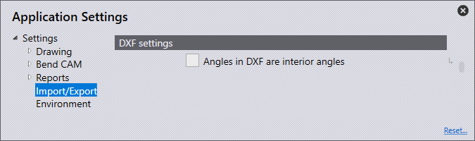

Importação/Exportação
Nesta seção, abordaremos a configuração de Import settings.

Clique no ícone Settings  na página inicial.
na página inicial.

Import settings
Nesta seção, abordaremos a configuração de Import settings. Clique no ícone Settings. Clique em Import/Export e navegue até o Import settings.

Units for DXF files - Defina para milímetros ou polegadas aqui.
Stitch together lines/arcs closer than this - Defina este valor (0>1 mm). Ao importar uma peça que tenha linhas/arcos mais próximos do que o valor definido, o software irá costurá-los juntos automaticamente na importação.
Maximum thickness for sheet-metal part - Para reconhecer uma peça grande de chapa, o limite de reconhecimento de chapa precisaria ser aumentado. (10>40 mm) Este valor é definido automaticamente por padrão para 25 mm ou uma polegada, dependendo da unidade utilizada.
Point entities - A opção selecionada determinará como os pontos serão importados.
Import all - Todos os pontos serão importados e exibidos.
Skip points on polylines - Isso ignora todos os pontos detectados nas polilinhas.
Skip all - Isso ignora todos os pontos na importação, e nenhum é mostrado.
Ignore layers in DXF/DWG files - Desenhos DXF e DWG geralmente são criados em camadas diferentes. Com este ajuste, o software ignora essas camadas e move todos os objetos para a camada padrão.
Explode blocks in 2D drawing - Divide agrupamentos durante a importação
Convert white entities to black - Ative esta configuração para converter objetos brancos em objetos pretos durante a importação.
Darken colors during DXF import- Ative esta configuração para escurecer objetos coloridos durante a importação.
Remove duplicate segments - Ative esta configuração para remover qualquer geometria duplicada encontrada na peça ao importar.
DXF settings
Nesta seção, abordaremos a configuração de DXF settings. Clique no ícone Settings. Clique em Import/Export e navegue até DXF settings.

Angles in DXF are interior angles - Ative esta configuração para que os ângulos em um DXF sejam tratados como ângulos de abertura.
Export settings
Nesta seção, abordaremos a configuração de Export settings. Clique no ícone Settings. Clique em Import/Export e navegue até Export settings.

No POLYLINE objects in DXF output - Normalmente, os contornos fechados são exibidos como polilinhas ao exportar DXFs. Alguns sistemas CAD não podem processar esta saída de dados. Com este ajuste, o software executa a saída do DXF com linhas e arcos. Estes arquivos podem ser lidos em todos os lugares, mas os arquivos criados são maiores e as conexões entre linhas e arcos são perdidas
Output bend-info when saving DXF files - Ative esta configuração para que um DXF exportado seja emitido com informações de dobra.
Bend-info in Starmatik format - Ligue este interruptor para emitir as informações de dobra no formato Starmatik. Isso é quando uma entidade de texto é posicionada exatamente no meio de cada linha que deve ser uma linha de dobra.
Convert black to gray on output - Ao exportar dados 2D, os objetos no arquivo DXF são exibidos em preto por padrão. Para poder reconhecer melhor os objetos nos programas CAD, este ajuste faz com que os objetos sejam apresentados em cinza na saída.
Start MetaCAM when PDG files are exported - Ative esta configuração para que um arquivo PDG seja configurado automaticamente para abrir no MetaCAM
Format for flat pattern - Ao exportar um padrão plano, isso pode ser definido para o formato de arquivo Geo, DXF ou PDG.
Spline conversion
Nesta seção, abordaremos a configuração de configurações Spline conversion. Clique no ícone Settings. Clique em Import/Export e navegue até as configurações Spline conversion.

Convert splines on import - Defina aqui se a conversão de estriado é desligada ou configurada para converter estriados em linhas ou arcos. Em qualquer caso, cada estriado será convertido em um objeto polilinha único que contém segmentos de linha ou segmentos de arco.
Node-count computation - O número de linhas ou arcos gerados é usando um dos dois mecanismos: passo ou desvio.
Length of each line or arc segment - Se for escolhido Passo no cálculo da contagem de nós, defina aqui o comprimento de cada arco ou segmento de linha para quebrar o estriado usando este comprimento de passo.
Maximum deviation during approximation - Se for escolhido Desvio no cálculo de contagem de nós, defina aqui o desvio máximo que é permitido entre o estriado liso original e a aproximação de linha ou arco. A polilinha é construída com o menor número de segmentos possível, mantendo o erro máximo dentro deste limite.
Assembly Explode
Nesta seção, abordaremos a configuração das configurações Assembly Explode. Clique no ícone Settings. Clique em
Import/Export e navegue até as configurações Assembly Explode 
Skip sheet-metal parts with no bends - Ao explodir um conjunto, ligar este interruptor mostrará apenas as peças de chapa com linhas de dobra. Desligar esta opção exibirá todas as peças no conjunto.
Components (nuts/bolts etc) to display - Use esta configuração para selecionar quais opções exibir ao explodir um conjunto que contém outros componentes.
None - Apenas as peças de chapa são exibidas depois de explodir, e outras porcas/parafusos não.
Unidentified - Apenas os componentes que ainda não foram identificados no software são exibidos.
All - Todos os componentes são exibidos.
Layer mapping

Nesta seção, abordaremos a configuração de Layer mapping. Clique no ícone Settings. Clique Import/Export e navegue para as configurações Layer mapping.
Nesta seção, as camadas usadas em peças sendo importadas no software podem ser mapeadas automaticamente quanto à sua funcionalidade (uso).
Se uma peça importada tiver uma camada de MARCAÇÃO, isso pode ser definido como usar automaticamente a camada Mark (marcação) no software.
Layer name - Este é o nome da camada que, se uma peça for importada com isso, será usada a funcionalidade definida no painel 'Usar'.
Use - Esta é a funcionalidade da camada. As diferentes opções disponíveis são:
Standard - Esta é a camada padrão a ser usada para CAM.
Auxiliary - Uma camada auxiliar, não deve ser usada para CAM.
Mark - Quaisquer entidades nesta camada serão marcadas, não cortadas.
Approach marker - Entidades de ponto indicando a posição de aproximação do laser.
Sequence marker - Marcadores de texto indicando a ordem de sequência dos contornos.
Forming center - Marca de centro para formação (ponto ou L pequeno).
Forming foot print - O contorno (pegada) de uma formação.
Evaporate - Esta camada seria usada para distinguir a queima do filme.
Dot marking - Esta camada seria usada para códigos QR.
Info - Esta é uma camada apenas informativa.